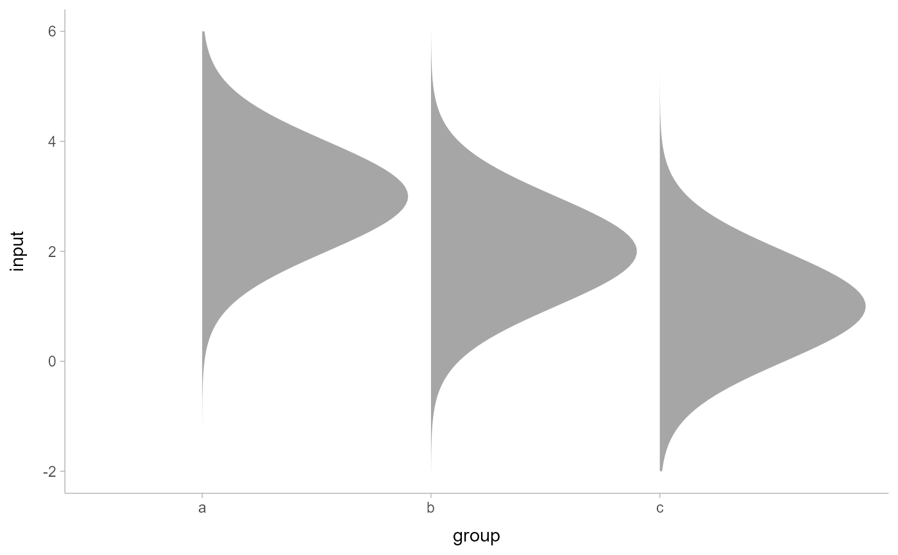

Shortcut version of geom_slabinterval() for creating slab (ridge) plots.
Roughly equivalent to:
geom_slabinterval(
show_point = FALSE,
show_interval = FALSE
)Usage
geom_slab(
mapping = NULL,
data = NULL,
stat = "identity",
position = "identity",
...,
orientation = NA,
normalize = "all",
fill_type = "segments",
subguide = "none",
na.rm = FALSE,
show.legend = NA,
inherit.aes = TRUE
)Arguments
- mapping
Set of aesthetic mappings created by
aes(). If specified andinherit.aes = TRUE(the default), it is combined with the default mapping at the top level of the plot. You must supplymappingif there is no plot mapping.- data
The data to be displayed in this layer. There are three options:
If
NULL, the default, the data is inherited from the plot data as specified in the call toggplot().A
data.frame, or other object, will override the plot data. All objects will be fortified to produce a data frame. Seefortify()for which variables will be created.A
functionwill be called with a single argument, the plot data. The return value must be adata.frame, and will be used as the layer data. Afunctioncan be created from aformula(e.g.~ head(.x, 10)).- stat
The statistical transformation to use on the data for this layer, either as a
ggprotoGeomsubclass or as a string naming the stat stripped of thestat_prefix (e.g."count"rather than"stat_count")- position
Position adjustment, either as a string, or the result of a call to a position adjustment function. Setting this equal to
"dodge"(position_dodge()) or"dodgejust"(position_dodgejust()) can be useful if you have overlapping geometries.- ...
Other arguments passed to
layer(). These are often aesthetics, used to set an aesthetic to a fixed value, likecolour = "red"orlinewidth = 3(see Aesthetics, below). They may also be parameters to the paired geom/stat.- orientation
Whether this geom is drawn horizontally or vertically. One of:
NA(default): automatically detect the orientation based on how the aesthetics are assigned. Automatic detection works most of the time."horizontal"(or"y"): draw horizontally, using theyaesthetic to identify different groups. For each group, uses thex,xmin,xmax, andthicknessaesthetics to draw points, intervals, and slabs."vertical"(or"x"): draw vertically, using thexaesthetic to identify different groups. For each group, uses they,ymin,ymax, andthicknessaesthetics to draw points, intervals, and slabs.
For compatibility with the base ggplot naming scheme for
orientation,"x"can be used as an alias for"vertical"and"y"as an alias for"horizontal"(ggdist had anorientationparameter before base ggplot did, hence the discrepancy).- normalize
How to normalize heights of functions input to the
thicknessaesthetic. One of:"all": normalize so that the maximum height across all data is1."panels": normalize within panels so that the maximum height in each panel is1."xy": normalize within the x/y axis opposite theorientationof this geom so that the maximum height at each value of the opposite axis is1."groups": normalize within values of the opposite axis and within each group so that the maximum height in each group is1."none": values are taken as is with no normalization (this should probably only be used with functions whose values are in [0,1], such as CDFs).
For a comprehensive discussion and examples of slab scaling and normalization, see the
thicknessscale article.- fill_type
What type of fill to use when the fill color or alpha varies within a slab. One of:
"segments": breaks up the slab geometry into segments for each unique combination of fill color and alpha value. This approach is supported by all graphics devices and works well for sharp cutoff values, but can give ugly results if a large number of unique fill colors are being used (as in gradients, like instat_gradientinterval())."gradient": agrid::linearGradient()is used to create a smooth gradient fill. This works well for large numbers of unique fill colors, but requires R >= 4.1 and is not yet supported on all graphics devices. As of this writing, thepng()graphics device withtype = "cairo", thesvg()device, thepdf()device, and theragg::agg_png()devices are known to support this option. On R < 4.1, this option will fall back tofill_type = "segments"with a message."auto": attempts to usefill_type = "gradient"if support for it can be auto-detected. On R >= 4.2, support for gradients can be auto-detected on some graphics devices; if support is not detected, this option will fall back tofill_type = "segments"(in case of a false negative,fill_type = "gradient"can be set explicitly). On R < 4.2, support for gradients cannot be auto-detected, so this will always fall back tofill_type = "segments", in which case you can setfill_type = "gradient"explicitly if you are using a graphics device that support gradients.
- subguide
Sub-guide used to annotate the
thicknessscale. One of:A function that takes a
scaleargument giving a ggplot2::Scale object and anorientationargument giving the orientation of the geometry and then returns a grid::grob that will draw the axis annotation, such assubguide_axis()(to draw a traditional axis) orsubguide_none()(to draw no annotation). Seesubguide_axis()for a list of possibilities and examples.A string giving the name of such a function when prefixed with
"subguide"; e.g."axis"or"none".
- na.rm
If
FALSE, the default, missing values are removed with a warning. IfTRUE, missing values are silently removed.- show.legend
logical. Should this layer be included in the legends?
NA, the default, includes if any aesthetics are mapped.FALSEnever includes, andTRUEalways includes. It can also be a named logical vector to finely select the aesthetics to display.- inherit.aes
If
FALSE, overrides the default aesthetics, rather than combining with them. This is most useful for helper functions that define both data and aesthetics and shouldn't inherit behaviour from the default plot specification, e.g.borders().
Value
A ggplot2::Geom representing a slab (ridge) geometry which can
be added to a ggplot() object.
Aesthetics
The slab+interval stats and geoms have a wide variety of aesthetics that control
the appearance of their three sub-geometries: the slab, the point, and
the interval.
Positional aesthetics
x: x position of the geometryy: y position of the geometry
Slab-specific aesthetics
thickness: The thickness of the slab at eachxvalue (iforientation = "horizontal") oryvalue (iforientation = "vertical") of the slab.side: Which side to place the slab on."topright","top", and"right"are synonyms which cause the slab to be drawn on the top or the right depending on iforientationis"horizontal"or"vertical"."bottomleft","bottom", and"left"are synonyms which cause the slab to be drawn on the bottom or the left depending on iforientationis"horizontal"or"vertical"."topleft"causes the slab to be drawn on the top or the left, and"bottomright"causes the slab to be drawn on the bottom or the right."both"draws the slab mirrored on both sides (as in a violin plot).scale: What proportion of the region allocated to this geom to use to draw the slab. Ifscale = 1, slabs that use the maximum range will just touch each other. Default is0.9to leave some space between adjacent slabs. For a comprehensive discussion and examples of slab scaling and normalization, see thethicknessscale article.justification: Justification of the interval relative to the slab, where0indicates bottom/left justification and1indicates top/right justification (depending onorientation). IfjustificationisNULL(the default), then it is set automatically based on the value ofside: whensideis"top"/"right"justificationis set to0, whensideis"bottom"/"left"justificationis set to1, and whensideis"both"justificationis set to 0.5.
Color aesthetics
colour: (orcolor) The color of the interval and point sub-geometries. Use theslab_color,interval_color, orpoint_coloraesthetics (below) to set sub-geometry colors separately.fill: The fill color of the slab and point sub-geometries. Use theslab_fillorpoint_fillaesthetics (below) to set sub-geometry colors separately.alpha: The opacity of the slab, interval, and point sub-geometries. Use theslab_alpha,interval_alpha, orpoint_alphaaesthetics (below) to set sub-geometry colors separately.colour_ramp: (orcolor_ramp) A secondary scale that modifies thecolorscale to "ramp" to another color. Seescale_colour_ramp()for examples.fill_ramp: A secondary scale that modifies thefillscale to "ramp" to another color. Seescale_fill_ramp()for examples.
Line aesthetics
linewidth: Width of the line used to draw the interval (except withgeom_slab(): then it is the width of the slab). With composite geometries including an interval and slab, useslab_linewidthto set the line width of the slab (see below). For interval, rawlinewidthvalues are transformed according to theinterval_size_domainandinterval_size_rangeparameters of thegeom(see above).size: Determines the size of the point. Iflinewidthis not provided,sizewill also determines the width of the line used to draw the interval (this allows line width and point size to be modified together by setting onlysizeand notlinewidth). Rawsizevalues are transformed according to theinterval_size_domain,interval_size_range, andfatten_pointparameters of thegeom(see above). Use thepoint_sizeaesthetic (below) to set sub-geometry size directly without applying the effects ofinterval_size_domain,interval_size_range, andfatten_point.stroke: Width of the outline around the point sub-geometry.linetype: Type of line (e.g.,"solid","dashed", etc) used to draw the interval and the outline of the slab (if it is visible). Use theslab_linetypeorinterval_linetypeaesthetics (below) to set sub-geometry line types separately.
Slab-specific color and line override aesthetics
slab_fill: Override forfill: the fill color of the slab.slab_colour: (orslab_color) Override forcolour/color: the outline color of the slab.slab_alpha: Override foralpha: the opacity of the slab.slab_linewidth: Override forlinwidth: the width of the outline of the slab.slab_linetype: Override forlinetype: the line type of the outline of the slab.
Deprecated aesthetics
slab_size: Useslab_linewidth.
Other aesthetics (these work as in standard geoms)
widthheightgroup
See examples of some of these aesthetics in action in vignette("slabinterval").
Learn more about the sub-geom override aesthetics (like interval_color) in the
scales documentation. Learn more about basic ggplot aesthetics in
vignette("ggplot2-specs").
See also
See stat_slab() for the stat version, intended for
use on sample data or analytical distributions.
See geom_slabinterval() for the geometry this shortcut is based on.
Other slabinterval geoms:
geom_interval(),
geom_pointinterval(),
geom_spike()
Examples
library(dplyr)
library(ggplot2)
theme_set(theme_ggdist())
# we will manually demonstrate plotting a density with geom_slab(),
# though generally speaking this is easier to do using stat_slab(), which
# will determine sensible limits automatically and correctly adjust
# densities when using scale transformations
df = expand.grid(
mean = 1:3,
input = seq(-2, 6, length.out = 100)
) %>%
mutate(
group = letters[4 - mean],
density = dnorm(input, mean, 1)
)
# orientation is detected automatically based on
# use of x or y
df %>%
ggplot(aes(y = group, x = input, thickness = density)) +
geom_slab()
df %>%
ggplot(aes(x = group, y = input, thickness = density)) +
geom_slab()

# RIDGE PLOTS
# "ridge" plots can be created by increasing the slab height and
# setting the slab color
df %>%
ggplot(aes(y = group, x = input, thickness = density)) +
geom_slab(height = 2, color = "black")